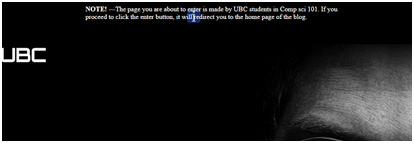

UBC Tech Talks - Final Project Report
Section L1C
Amin Ahmandi-Niri e-mail: amin.a95@hotmail.com
Cynthia Naslund email: believe.in.blue@hotmail.com
Michael Zhong e-mail: zhong.michael@outlook.com
Project Proposal
UBC Tech Talks
We have created a blog that features both new and upcoming technological gadgets and products. From 3D printers to driverless cars, we expose readers to a wide variety of products that demonstrate the incredible diversity and potential of computer science. Since our main inspiration for this blog was to help readers appreciate the interconnectedness and multidisciplinary field of computer science, we have made sure to explain what external field computer science is connecting with for each product.
For instance, for 3D printers, we have explained their current applicability in the food industry and also their potential applicability in the sector of health/medicine. Another example includes a helmet capable of monitoring thoughts, and it's link to the field of mental health and safety when flying aircraft. This serves to demonstrate our underlying message that computer science isn't just the stereotypical field of gaming and various types of laptops/desktop computers. Instead, it goes beyond that! It is a catalytic field that enhances so many other disciplines and aspects of life by serving as a gateway for convenience, discovery, and progress. The message was a very strong take-away point we took from the course CPSC 101; we hoped to share it with others through the medium of UBC Tech Talks.
Complemented with a clutterless and visually-pleasing appearance, we hope that viewers enjoy their time on UBC Tech Talks and are inspired by the vast catalytic potential of computer science!
With one minor adjustment, we believe that we have fulfilled what was set out in the project proposal. As decided upon, we have created a visually attractive website that showcases new and upcoming technological products.
That said, there were components of the proposal that we simply could not accomplish. One such of this is the enter page. We were unable to code for a background with included a video playing and a loading bar. Instead, we modified our plan to still include a dynamic component that showcases a slideshow of photographs that fade in and out. Hence, instead of completing abandoning our goal, we modified it into that was still similar to our original goal and still presented a challenge (needed to learn coding for doing the slideshow effect, not just something we have been taught in lab/lecture).
Otherwise, we have accomplished everything else listed on the proposal.
Furthermore, in terms of tasks, we set out to accomplish what we had originally agreed upon. However, we could like to point that there were minor adjustments.
Website Design/Layout seemed too broad. So, we split it up such that Amin took on the layout/design, Michael created the gallery, and Cynthia added an About Us page.
Also, for the final report, we used what we had originally agreed upon but modified our duties to make them more specific. For instance, Amin was in charge of summarizing skills/concepts; Cynthia was in charge of fulfilling the rest of the components; and Michael listed references and coded the content to make sure that it was easy to read and looked professional.
After meeting the minimum goals set out in the proposal, we went beyond by adding an 'About Us' page, 'Archive' and a 'Gallery' that showcased the products that we wrote about. We also included a logo of UBC on our top navigation bar.
In summation, we believe that we fulfilled what we expressed on the project proposal. Other than modifying one aspect and improving goals so that they contained more specificity, our finished product is in synch with our proposal. We have also created a blog that leaves readers excited and inspired by not only the products they read about, but also the vast interconnectedness and interdisciplinary nature of computer science.
Individual Roles
- Interactive Components & Designing of the 'Enter' page: Amin
- Resubmit proposal -Cynthia
- Research technological products + write product descriptions + accompanying photos: Cynthia (with help from Amin & MIchael)
- Website Design / Layout -Amin
- Gallery -Michael
- Research + learn coding for the new interactive components -Amin
- Quality Control
- Checks website -Michael
- Make sure site looks nice - Amin, Michael
- Make sure all links work -Michael & Amin
- Ensures all criteria fulfilled for the project, final report, and presentation -Cynthia, Amin, Michael
- Planning of the presentation -Cynthia, Amin, Michael
- Report
- Summary of website, proposal, breakdown -Cynthia
- Summary of skills and concept -Amin
- References + Coding for the layout-Michael
What We Learned
We used many of the techniques learned in class to create the website that we made. Most of the Javascript, HTML , CSS come from what we learned in class in labs. Surely without having learned those in class, this project would have been much harder.
There are a few different challenges and a few different lessons involved in completing this project. We will start my talking about the challenges. Coding for the enter page, (the page leading to the home page via an enter button), involved a couple challenges.
One challenge involved figuring out how to get the 'fade in and fade out' transitions between images for the slideshow. We didn't just want one image to go to the next image instantly, we wanted a smooth transition. Having this goal in mind, we figured that we had to implement our vision via CSS3. So, we learned a little bit of CSS3, specifically about the engine that processes the CSS3. Every browser has a different engine (Chrome/Safari have "Webkit", Firefox has "Moz", Opera has "O"). This means that for each browser, you need to add in the corresponding code for the browsers. The code for making a transition in CSS3 is different for each different browser, so one will need to add in the different ones to make it work on all browsers.
As you can see in this bit of code above, it is calling the transition function from the browser so that whenever you change the opacity of the image, it will automatically add a smooth transition to it which causes the fading effect. We made functions for each image that set the opacity of all other images to 0 and the one shown to 1. We then also changed the color of the text. The image below shows one of the functions of the 4 almost identical functions.
Another challenge that accompanied this challenge was thinking of what method we wanted to use for showing the images and how we were going to accomplish that. Previously, we originally had image buttons for the user to manually switch images. We improved that by adding an automatic image slideshow with setInterval and setTimeout functions as shown here. You see every 25 seconds, the loopsies function is called and loopsies calls the 4 functions which display the different images to show on the 5th, 10th, 15th, 20th seconds.
There is also a body onload so that it loads the startLoop function as soon as the page loads. The image above depicts running the loopsies function every 25 seconds and the loopsies function goes through each image every 5 seconds.
The main things learned from the 'enter page' challenges were the various ways in which we tried to get a function for making the automatic slideshow to work and finally getting it work, the difference between setInterval, setTimeout and how to use them together to get the automation we wanted and the CSS3 transitions for fading the pictures in/out. As an example, we had to find out that setInterval runs the function on the interval of however many seconds you define it to, whereas setTimeout runs the function once; knowing that, we came up with a function that uses both those to get the automatic slideshow.
Everything else throughout the rest of the website is composed of similar coding functions. This includes things like onclick events, CSS property changing for design, 'hover over' CSS effects, and standard HTML. These were all covered in class, but we also added some new components. Examples include:
use of div tags and learning how they are a main element used by web designers to design websites
What we used from outside sources into our website:
- To touch on how we implemented the nav bar (the bar that has "Home, About us, Archive, Gallery), we used html learned from in class and then we implemented an API called pure which we used to create the CSS of it. We ended up tweaking the css of the pure api to make it to our liking.
- We also added the font awesome API, and this was used in one instance – which was the arrow pointing down icon which points towards the latest blog posts on the home page.
- The nice looking fonts for the titles of some pages are used via google fonts api.
Aside from the enter page, two of the biggest challenges and lessons learned were to never use px for designing but to instead use %'s so that the website works properly on any resolution. We also learned a lot about designing with div's through trial and error.
In the beginning we didn't know anything about div's and how/where to get started with the design. It all started to make sense when we kept rearranging the div's through trial and error.
We also learned that it's best practice to make a container div for your other divs. This simplifies the design into fewer, bigger parts.
One of the biggest issues we had towards the end was noticing that some of the pages we created were using pixels instead of percentages. Hence, UBC Tech Talks wouldn't look as nice on some resolutions. However, I'd like to point out that in the very end, we fixed this issue for the most part; we added the percentage values instead of pixels, but we are still skeptical because we would have to test the website on every resolution and different browsers to be sure. The best part of the coding in my opinion was working on the enter page, I had a lot of fun trying to think of functions for the automatic + manual slideshow and also using the transitions made it really cool. All in all, it was a fun process/project.
Examples of Newly Learned Technical Skills
As soon as one loads the 'enter page', one has 5 seconds before the picture of Steve Jobs appears via the setInterval and setTimeout functions discussed above. The black screen transitions smoothly to the Steve Jobs image.
We also added the little bit of HTML5 through the use of figure/figure caption, as show below. Specifically, a figure is shown whenever you hover on the top of the blue 'i' icon. This was done by CSS, but also added in the transition code to guarantee a smooth transition which used CSS3.

As soon as one presses 'Enter', one is redirected to the home page. Here, one may notice a menu bar, UBC and a UBC Tech Talks heading. The font for this title was imported from google api fonts (as shown below.) Lastly, for the menu bar, we used HTML learned in class, but for the CSS we downloaded Pure API and put it into our source folder so that we could implement the nice CSS module they have for it. We did however tweak it a bit to our liking. See below for pictures.
The logo was resized with CSS and put in a separate div than the menu bar.
Hovering over the Gallery button:
Using the same CSS function ":hover", we made all the images displayed in Archive and on each product page lower in opacity when one hovers over them. They are also clickable and lead to links of each website they correspond to.
You will see this arrow image on the bottom left of the gallery screen. This image, when clicked, brings you to the top of the page. All you have to do is put a "#" for the a href, which makes it link to the current page.
Lastly, looking at the gallery page, you can see all the images of the products discussed. As one hovers over each image, the CSS3 function "transform" expands each image through a smooth transition.
{kind=link}
{kind=link}
{kind=link}
{kind=link}
{kind=link}
{kind=link}
{kind=link}
{kind=link}
{kind=link}
{kind=link}
{kind=link}
{kind=link}
{kind=link}
{kind=link}
{kind=link}
{kind=link}
{kind=link}
{kind=link}
{kind=link}
{kind=link}
{kind=link}
{kind=link}